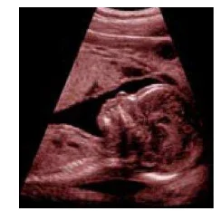
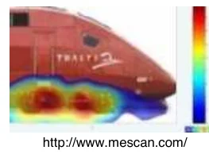
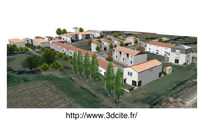

Imagerie acoustique, géolocalisation

[Échographie]
L'industrie (au sens large) et la médecine
utilisent depuis très longtemps des techniques de propagation d'ondes pour le contrôle ou la caractérisation de
milieux traversés. On peut citer par exemple :
- Ondes sismiques utilisées en géologie et en particulier dans le domaine pétrolier,
- Fréquences audibles pour le contrôle in-situ de l'évolution dans le temps des caractéristiques du béton ou la
caractérisation de certains matériaux utilisés dans le domaine acoustique, ainsi qu'en tomographie océanique pour
mesurer par exemple la température des eaux profondes,
- Ondes ultrasonores en Contrôles Non Destructifs (CND) afin de détecter des défauts (fissures) de petites
dimensions, en échographie médicale afin de visualiser des variations légères de densité des tissus, ou pour les
sonars sous-marins,
- Ondes électromagnétiques pour les radars,
- Etc.
L'onde « initiale » étant parfaitement connue, ces techniques utilisent les modifications constatées sur ces ondes
durant leur propagation pour déterminer les caractéristiques du milieu traversé.
A noter l'exception de la tomographie acoustique océanique passive (voir par exemple les travaux de l'ENSTA de Brest Ecole Nationale Supérieure des Techniques Avancées
– Brest (Tomographie acoustique passive)), technique de caractérisation du milieu n'utilisant pas un son
émis volontairement mais des sons naturellement présents dans l'environnement (cris de cétacés, bruits de navires,
…).

[Imagerie acoustique] Source : http://www.mescan.com/
L'imagerie acoustique, quant à elle, se place dans des conditions connues de propagation (généralement en champ
proche pour n'utiliser que des ondes directes) pour identifier la source de bruit, tant en intensité et fréquence
qu'en localisation Imagerie
acoustique, Revue « Mesures » de mai 2003. Il est ainsi possible de cartographier les émissions sonores
d'un moteur, de vérifier les qualités d'une paroi isolante, de faire une étude environnementale en ville, etc.
Dans tous les cas, le principe est de mesurer l'onde en plusieurs points et d'appliquer à ces données des calculs
de rétro-propagation permettant d'en retrouver la source dans des conditions de propagation connues. Les techniques
diffèrent en terme de nombre de points de mesure (de 3 à plusieurs centaines), moyens de mesure et grandeurs prises
en compte (intensité, pression, …), algorithme de rétro-propagation utilisés, … et, évidemment, de coût et de
résultats, en particulier au niveau de la résolution (fréquence et positionnement).
Certaines ne sont applicables qu'à des sources sonores stationnaires (permanentes) mais le beamforming et l'holographie acoustique Holographie acoustique en champ
proche, ENSIM permettent de cartographier des sources non stationnaires et font actuellement l'objet de
très nombreux travaux de développement (voir par exemple les travaux du LAUM du Mans Laboratoire d'Acoustique de l'Université du Maine – Le Mans (Holographie
acoustique)).
Radars, sonars, …, la géolocalisation d'une source sonore est donc une technique maîtrisée depuis des années.
A noter toutefois que la quasi-totalité de ces techniques n'utilisent que des champs proches ou des ondes directes,
c'est-à-dire que seule l'onde émise ou réfléchie par l'objet à caractériser et parvenant directement au capteur est
prise en compte, et qu'il est fait abstraction, au besoin à l'aide de filtres, des réflexions et autres « bruits »
venant parasiter le signal.
Pour des raisons initialement militaires (localisation d'un sous-marin en eaux peu profondes, …), puis
environnementales (réduction des pollutions sonores liées aux transports, …), les techniques de calcul en champ
lointain (et donc de prise en compte de l'environnement sur le signal reçu) ont énormément progressées depuis
quelques décennies.
La géolocalisation d'une source sonore est donc applicable dans de très nombreux cas, en utilisant les modèles
numériques de terrain (MNT, cartes du relief) disponibles par
exemple auprès de l'IGN Institut National de l'Information Géographique et forestière – St
Mandé (Modèles Numériques de Terrain), et des algorithmes de rétro-propagation prenant en compte l'effet de
la topographie et des conditions météorologiques (voir par exemple les travaux de l'INSA de Strasbourg Institut National des Sciences Appliquées – Strasbourg
(Acoustique environnementale) et du LMFA de Lyon Laboratoire
de Mécanique des Fluides et d'Acoustique – Ecole Centrale – Lyon (Acoustique, psychoacoustique, …) en
milieu terrestre, du LMA de Marseille Laboratoire de
Mécanique et d'Acoustique – CNRS – Marseille (Acoustique sous-marine, acoustique des salles, psychoacoustique,
…) en milieu sous-marin).
Encore faut-il que l'on dispose de suffisamment de points de mesure, et d'enregistrements de qualité suffisante… Et
là est bien le frein principal de ces méthodes. Ainsi, en l'état actuel des techniques, il serait possible de :
- Calculer assez précisément la trajectoire d'un aéronef quelconque, lors d'un meeting aérien (ou autre cas
assimilable) en utilisant les enregistrements sonores divers réalisés par les spectateurs sur leurs caméscopes, ou
autres enregistrements de surveillance : nombre de points de mesure important, conditions de propagation simples
pour ne pas dire assimilables à un champ proche, …
- Dans des cas plus complexes, vérifier la cohérence entre des hypothèses d'explication et les enregistrements
réalisés par quelques témoins.
Sans oublier, bien sûr, les nombreux cas intermédiaires dans lesquels les calculs de rétro-propagation
permettraient d'approcher la trajectoire de l'objet afin d'écarter, ou de confirmer, certaines hypothèses
envisagées.
Reconstitutions en réalité virtuelle

[Reconstitution 3D d'un quartier] Source : http://www.3dcite.fr/
Connue depuis quelques décennies, les techniques de réalité virtuelles sont de plus en plus diffusées et utilisées
Centre Européen de Réalité Virtuelle – Brest Centre de Réalité Virtuelle de la
Méditerranée – Marseille Institut
National de Recherche en Informatique et Automatisme – Sophia Antipolis (Réalité virtuelle, son
spatialisé).
L'une de leurs applications récentes est l'urbanisme et l'aménagement du territoire Centre Scientifique et Technique du Bâtiment – Marne La Vallée (Utilisation de la
Réalité Virtuelle en Aménagement du Territoire), que ce soit en outil d'aide à la décision en particulier
dans le domaine des transports ou de simple présentation interactive Visite de la Ville de Cannes en 3D, voire en reconstitution de lieux
historiques.
Suivant les cas, elles utilisent des environnements numériques entièrement reconstitués, ou se basent, en les
complétant, sur les MNT déjà cités précédemment.
Du point de vue sonore, notons que les techniques proposées par les équipements audio grand public sont loin d'être
représentatives des possibilités offertes par les techniques dites de son spatialisé Institut de Recherche et Coordination Acoustique Musique – Paris
(Psychoacoustique, son spatialisé, …), et en particulier par l'écoute binaurale au casque Site de Radio-France proposant quelques enregistrements
en son spatialisé binaural. Cette technique vise à ce que les tympans de l'auditeur reçoivent des ondes
de pression similaires à celles reçues en situation réelle. Le principe repose sur la reproduction au niveau des
oreilles d'un auditeur de toutes les informations nécessaires pour la reproduction d'une image sonore
extra-crânienne. L'image sonore perçue, à l'image de la réalité est alors comprise par le cerveau comme étant en
trois dimensions et provoque ainsi un rendu de la réalité sonore fidèle. Il ne s'agit plus d'entendre avec les
oreilles, mais avec le cerveau La spatialisation du
son, revue « Pour la Science » de Novembre 2008.
A l'aide des MNT et en utilisant divers algorithmes de
propagation acoustique prenant en compte la topographie, il serait donc parfaitement possible de réaliser des
reconstitutions en réalité virtuelle, tant en termes de composantes visuelles que acoustiques, que ce soit pour
discriminer diverses hypothèses ou d'en améliorer l'analyse en particulier dans sa perception subjective. Le seul
frein à ces possibilités est alors le coût, que ce soit en termes d'expertise ou de matériel nécessaire.